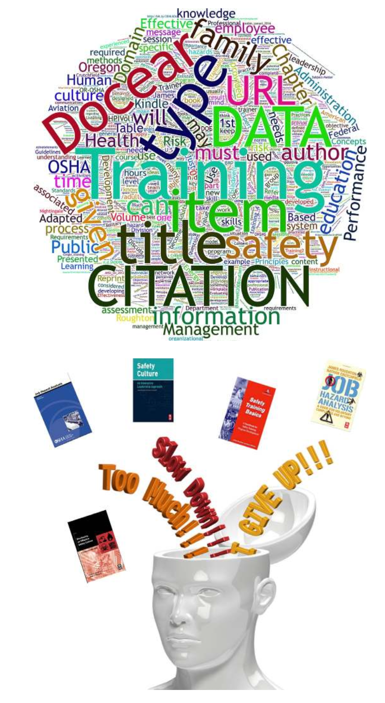

EN - ORIGINAL
KO - 번역 / 주석
제13장: 안전 교육훈련 니즈 개발 (Developing Safety Training Needs)
EN - ORIGINAL

KO - 번역 / 주석
EN - ORIGINAL
INTRODUCTION
KO - 번역 / 주석
서론 (INTRODUCTION)
EN - ORIGINAL
Training may attempt to promote beliefs about the value and importance of safety, yet on leaving the training session, if nothing has changed in how work is managed, employees return to the behavior driving the organization. The desired impact of training can only be sustained when the internal organizational constraints, time pressure, budgets, mandates, leadership skills, and so on, driving the culture is understood. Training would then be designed and structured to overcome or reduce these constraints.
KO - 번역 / 주석
훈련은 안전의 가치와 중요성에 대한 신념을 촉진하려고 시도할 수 있지만, 훈련 세션을 마친 후 현장의 업무 관리 방식에 아무런 변화가 없다면 직원들은 결국 조직을 지배하는 기존의 행동 방식으로 되돌아가게 됩니다. 훈련이 기대하는 바람직한 효과는 문화를 이끄는 내부적 조직 제약요인, 시간적 압박, 예산 한계, 법적 의무사항, 리더십 역량 등을 완벽히 이해할 때에만 지속될 수 있습니다. 그래야만 이러한 제약요인들을 극복하거나 완화하도록 훈련을 설계하고 구조화할 수 있습니다.
EN - ORIGINAL
Through experience, the authors found that training is more complicated than telling employees how to perform their jobs in a limited time frame. Information and training should be able to transfer necessary job knowledge from the designated “trainer” to a “learner.” Education and training should be provided using methods employees can understand, accept, and immediately use in their assigned task.
KO - 번역 / 주석
저자들은 오랜 실무 경험을 통해, 교육훈련이란 제한된 시간 내에 직원들에게 직무 수행 요령을 단순히 말해주는 것보다 훨씬 더 복잡한 과정임을 깨달았습니다. 정보와 훈련은 지정된 '교수자(Trainer)'로부터 '학습자(Learner)'에게 필수적인 직무 지식을 온전히 전이(Transfer)시킬 수 있어야 합니다. 교육과 훈련은 직원들이 충분히 이해하고, 기꺼이 수용하며, 할당된 업무에 즉시 활용할 수 있는 방식으로 제공되어야 합니다.
EN - ORIGINAL
> Hope Is Not a Strategy
> — (Page, 2003)
KO - 번역 / 주석
> 희망은 전략이 아니다 (Hope Is Not a Strategy)
> — (Page, 2003)
EN - ORIGINAL
- On completion of this chapter, you should be able to:
- Explain the differences between education and training.
- Explain methods used to conduct a training needs assessment.
- Explain how the SMART method can be used to set training goals and objectives.
- Explain and list the types of training methods.
- Explain why an understanding of employee experience is needed in developing training content.
- Explain why communication is critical to the safety culture.
KO - 번역 / 주석
- 본 장을 학습한 후 독자는 다음 사항을 수행할 수 있어야 합니다:
- 교육(Education)과 훈련(Training)의 본질적 차이점을 설명할 수 있다.
- 훈련 니즈 평가(Training Needs Assessment)를 수행하는 데 활용되는 방법들을 설명할 수 있다.
- SMART 기법을 활용하여 교육훈련 목표 및 세부 목표를 설정하는 방식을 설명할 수 있다.
- 다양한 교육훈련 방법의 유형을 열거하고 설명할 수 있다.
- 훈련 콘텐츠를 개발할 때 작업자의 현장 경험을 이해해야 하는 이유를 설명할 수 있다.
- 의사소통(Communication)이 안전문화에 결정적인 영향을 미치는 이유를 설명할 수 있다.
EN - ORIGINAL
INITIAL EDUCATION AND TRAINING ASSESSMENT
KO - 번역 / 주석
초기 교육 및 훈련 평가 (INITIAL EDUCATION AND TRAINING ASSESSMENT)
EN - ORIGINAL
As part of a communication network, a strong positive link is essential to the training department of an organization. A close relationship should be maintained with the organization’s training staff to ensure that the safety professional and the safety management system are not in conflict with existing training programs. The training staff may not be able to provide core safety training depending on their mandated responsibilities. If relationships with the training department are solid, a team approach may be possible for assessment, structuring, design, and delivery of required safety management system and safety-related training criteria.
KO - 번역 / 주석
의사소통 네트워크의 일환으로서, 조직 내 교육훈련 부서와의 강력하고 긍정적인 연계는 필수적입니다. 안전 전문가와 안전보건경영시스템(OHSMS)이 기존의 기업 교육 프로그램과 마찰이나 갈등을 빚지 않도록 사내 교육훈련 부서와 긴밀한 관계를 유지해야 합니다. 훈련 부서의 전담 인력은 그들에게 부여된 기본 업무 범위에 따라 핵심 안전 훈련을 직접 제공하지 못할 수도 있습니다. 그러나 교육 부서와의 관계가 확고하다면, 필수 안전경영시스템 및 안전 관련 교육 기준의 니즈 평가, 체계화, 설계 및 실행 전 과정에서 협업 팀 접근법(Team approach)을 효과적으로 가동할 수 있습니다.
EN - ORIGINAL
For a strong safety culture, the organization should place a strong emphasis on the positive value the safety management system brings to the organization. The culture should strengthen embedded beliefs in the value of continuing education and training of leaders and employees. The organization with a strong culture of learning ensures that all employees have a working knowledge of how the safety management system operates and their responsibilities in continuous learning.
KO - 번역 / 주석
강력한 안전문화를 정착시키기 위해, 조직은 안전보건경영시스템이 조직 전체에 가져다주는 긍정적인 가치를 전사적으로 강조해야 합니다. 안전문화는 리더와 구성원 모두를 위한 지속적인 교육과 훈련의 가치에 대한 내재화된 신념을 지속적으로 강화해야 합니다. 학습 문화가 강력한 조직은 모든 직원이 안전보건경영시스템의 작동 원리와 지속적 학습에 있어서 자신의 책무(Responsibilities)를 실무적으로 숙지하도록 보장합니다.
EN - ORIGINAL
In another respect, some organizations may not have any training staff to develop specific training needs. Training development may be up to one person who has been assigned duties of the safety professional. Based on experience, it is sometimes difficult to be able to develop a quality presentation that meets all desired requirements.
KO - 번역 / 주석
반면, 일부 조직은 구체적인 교육훈련 니즈를 개발할 전담 교육 인력이 전무할 수도 있습니다. 이러한 경우 훈련 개발 업무 전체가 안전보건 전문가의 임무를 홀로 맡은 단 한 사람의 몫이 되기도 합니다. 현장 경험에 비추어 볼 때, 혼자의 힘으로 조직이 요구하는 모든 기준을 충족하는 고품질의 교육 자료를 개발하기란 대단히 어려운 일입니다.
EN - ORIGINAL
EDUCATION AND TRAINING PERFORMANCE
KO - 번역 / 주석
교육 및 훈련의 성과 (EDUCATION AND TRAINING PERFORMANCE)
EN - ORIGINAL
The objective of education and training is to change or improve employee performance by developing desired operational behaviors. The setting of training goals and objectives for the improvement of education and training should be based on specific, measurable, and performance-based objectives (SMART) goals, as discussed in Chapter 4, Establishing the Direction for the Safety Culture. Refer Appendix 13.1 for an example of some characteristics of a good training program.
KO - 번역 / 주석
교육과 훈련의 궁극적인 목표는 조직이 요구하는 바람직한 운영 행동을 배양함으로써 구성원의 직무 성과를 변화시키거나 획기적으로 개선하는 데 있습니다. 교육 및 훈련의 발전을 위한 훈련 목표와 세부 학습 목표의 설정은 제4장(안전문화의 방향 설정)에서 논의된 바와 같이 구체적이고, 측정 가능하며, 성과 기반인 SMART 목표에 기초해야 합니다. 우수한 교육훈련 프로그램이 갖추어야 할 주요 특성의 예시는 부록 13.1을 참조하십시오.
EN - ORIGINAL
For example, traditional safety training sessions consist of classroom or group lectures, watching videos on safety topics, or reading handouts of safety-related materials. While useful information may be provided, the potential of retaining or understanding the information is dramatically reduced unless a blend of hands-on and physical demonstration is included with a timely follow-up. Fig. 13.1 provides an overview of successful training techniques.
KO - 번역 / 주석
예를 들어, 전통적인 안전 교육 세션은 주로 강의실에서의 주입식 집체 강의, 안전 주제 동영상 시청, 또는 안전 관련 인쇄 유인물 배포로 구성되었습니다. 이러한 방식도 유용한 정보를 전달할 수는 있지만, 시의적절한 후속 조치와 함께 실습 및 신체적 시연(Hands-on and physical demonstration)이 조화롭게 결합되지 않는다면 전달된 정보의 습득률과 이해도는 극적으로 떨어지게 됩니다. 그림 13.1은 성공적인 교육훈련 기법의 개요를 보여줍니다.
EN - ORIGINAL

KO - 번역 / 주석
EN - ORIGINAL
This perception of what constitutes appropriate training is based on methods educational institutions have had in place for decades and remains embedded in many organizations. “Off the shelf” training programs are often used to save time and budget with limited or no effort made to modify the training for a specific group. A generic training approach can fail to ensure that employees understand why a set of established rules should be followed. Training employees can become rote and not fix a perceived problem or gain accurate knowledge. Training should be designed with properly designed guidelines with supplemental information (Roughton & Lyons, 1999; Fig. 13.2).
KO - 번역 / 주석
무엇이 적절한 교육훈련인가에 대한 이러한 고정관념은 전통적 교육기관들이 수십 년간 고수해 온 방식에 기초하고 있으며, 여전히 많은 기업 조직에 뿌리 깊게 박혀 있습니다. 시간과 예산을 절감하기 위해 시중의 '기성품(Off-the-shelf)' 교육 프로그램이 흔히 사용되며, 특정 대상 집단에 맞추어 교육을 최적화하려는 노력은 거의 없거나 극히 제한적입니다. 이러한 획일적인 범용 훈련 방식은 직원들에게 왜 정해진 사내 규칙을 준수해야 하는지에 대한 근본적인 이해를 심어주지 못합니다. 이로 인해 작업자 교육은 단순 암기식 기계적 주입으로 전락하여 현장의 실질적 문제를 해결하지 못하고 정확한 지식을 습득시키지도 못합니다. 훈련은 보충 정보와 함께 체계적으로 고안된 가이드라인에 따라 정밀하게 설계되어야 합니다 (Roughton & Lyons, 1999; 그림 13.2 참조).
EN - ORIGINAL
> "Though it seems hard to believe, instructors are frequently asked to develop courses intended to teach people what they already know, or to use instruction to solve problems that can’t be solved by instruction."
> — Robert Mager
KO - 번역 / 주석
> "믿기 힘들겠지만, 교수자들은 사람들이 이미 잘 알고 있는 내용을 가르치기 위한 강좌를 개발하거나, 교육훈련으로는 결코 해결할 수 없는 문제를 훈련으로 해결해 달라는 요구를 빈번하게 받는다."
> — 로버트 메이거 (Robert Mager)
EN - ORIGINAL

KO - 번역 / 주석
EN - ORIGINAL
LEADERSHIP SUPPORT FOR TRAINING
KO - 번역 / 주석
훈련에 대한 리더십의 지원 (LEADERSHIP SUPPORT FOR TRAINING)
EN - ORIGINAL
For example, in ANSI Z10-2012, an organization is to “develop processes defining safety competencies, appropriate education and training are provided, employees have access to training, and it is in a language they understand, training is timely, and instructors are competent” (Occupational Health and Safety Systems, 2012; System safety training, 2000; refer Table 13.1).
KO - 번역 / 주석
예를 들어 ANSI Z10-2012 규격에서는 조직이 "안전 역량을 규정하는 프로세스를 개발하고, 적절한 교육과 훈련을 제공하며, 구성원이 훈련에 쉽게 접근할 수 있고 이해할 수 있는 언어로 제공되도록 보장하며, 훈련이 시의적절하고 교수자가 전문 역량을 갖추도록 보장해야 한다"고 명시하고 있습니다 (Occupational Health and Safety Systems, 2012; System safety training, 2000; 표 13.1 참조).
EN - ORIGINAL
When using an approach such as what was discussed in Chapter 11, Developing an Activity-Based Safety System, supervisors, and team leaders can potentially become mentors or coaches who can further reinforce safety-related information provided during formal training sessions. In the daily preshift reviews, weekly summary followed by in-depth monthly meetings, employees can discuss what they have learned and share feedback on the effectiveness of the training materials and content.
KO - 번역 / 주석
제11장(활동 기반 안전 시스템 구축)에서 논의된 접근법을 활용할 경우, 일선 관리감독자와 팀 리더는 공식 훈련 세션 중에 제공된 안전 관련 정보를 일상 작업에서 지속적으로 강화해 주는 멘토 또는 코치로 발전할 수 있습니다. 매일의 작업 전 안전 점검(Preshift review), 주간 요약, 그리고 심층 월간 회의를 통해 직원들은 배운 지식을 자유롭게 토론하고 교육 자료와 콘텐츠의 실효성에 대한 생생한 피드백을 공유할 수 있습니다.
EN - ORIGINAL
Training elements suggested in the Occupational Safety and Health Administration (OSHA) basic training guidelines provide an outline of the design and implementation of a suggested training program. Refer Table 13.2 for a list of OSHA training development guidelines.
KO - 번역 / 주석
미국 직업안전보건청(OSHA)의 기본 훈련 지침에서 제시하는 교육훈련 요소들은 권장되는 교육훈련 프로그램의 설계 및 실행에 대한 명확한 프레임워크를 제공합니다. OSHA 훈련 개발 지침 목록은 표 13.2를 참조하십시오.
EN - ORIGINAL

KO - 번역 / 주석
EN - ORIGINAL
- The organization shall establish a process to:
- Define and assess the OHSMS competence needed for employees and contractors.
- Ensure through appropriate education, training, or other methods that employees and contractors are aware of applicable OHSMS requirements and their importance in the company to carry out the responsibilities as defined in the OHSMS.
- Ensure access to, and remove barriers to participation in education and training as defined in the organization’s OHSMS.
- Ensure training is provided to the language trainees understand.
- Ensure training is ongoing and is provided in a timely fashion.
- Ensure trainers are competent to train employees.
KO - 번역 / 주석
- 조직은 다음을 수행하기 위한 공식 프로세스를 수립해야 합니다:
- 임직원 및 외주 협력업체 인력에게 요구되는 OHSMS 안전보건 역량을 정의하고 체계적으로 평가한다.
- 적절한 교육, 훈련 또는 기타 실효성 있는 방식을 통해, 근로자와 도급업체가 적용 가능한 OHSMS 요구사항과 OHSMS에 정의된 책무를 이행하는 데 있어 사내 규정 준수가 갖는 중요성을 완벽히 인식하도록 보장한다.
- 조직의 OHSMS에 정의된 바에 따라 교육 및 훈련에 대한 접근성을 보장하고, 훈련 참여를 가로막는 제약 장벽을 능동적으로 제거한다.
- 피교육자가 직관적으로 이해할 수 있는 모국어 및 눈높이 언어로 훈련이 제공되도록 보장한다.
- 훈련이 일회성에 그치지 않고 지속적으로 운영되며 적시에 시의적절하게 제공되도록 보장한다.
- 직원들을 가르치는 교수자(강사)가 검증된 역량과 자격을 갖추도록 철저히 보장한다.
EN - ORIGINAL

KO - 번역 / 주석
EN - ORIGINAL
- The OSHA model has seven elements:
- Determine if training is needed.
- Identify training needs.
- Identify the goals and objectives for training.
- Develop training content and activities.
- Develop training evaluation methods.
- Develop training documents for administration and recordkeeping.
- Develop improvement strategies based on feedback.
KO - 번역 / 주석
- OSHA 교육훈련 모델은 다음의 7대 핵심 요소로 구성됩니다:
- 훈련의 필요성 여부 결정 (Determine if training is needed)
- 구체적 훈련 니즈 식별 (Identify training needs)
- 훈련의 목표 및 세부 목표 설정 (Identify the goals and objectives for training)
- 훈련 콘텐츠 및 학습 활동 개발 (Develop training content and activities)
- 훈련 평가 방법 개발 (Develop training evaluation methods)
- 훈련 행정 관리 및 기록 보존 문서 체계 구축 (Develop training documents for administration and recordkeeping)
- 현장 피드백에 기초한 지속적 개선 전략 수립 (Develop improvement strategies based on feedback)
EN - ORIGINAL
The OSHA training model is designed to be used to enhance a safety training program. Using this model provides a structure for improvement and better administration of safety training programs. The structure can address site-specific issues, fulfill the learning needs of employees, and strengthen the overall safety management system. Refer Appendix 13.2 for the public domain document from the Occupational Safety and Health Administration, “Training Requirements in OSHA Standards” (Training Requirements in OSHA Standards and Training Guidelines, 2015) that can be downloaded and used for your library.
KO - 번역 / 주석
OSHA 교육훈련 모델은 사내 안전 교육 프로그램을 고도화하도록 설계되었습니다. 이 모델을 적용하면 안전 훈련 프로그램의 체계적 개선과 우수한 행정적 관리를 위한 탄탄한 구조를 확보할 수 있습니다. 이 구조는 사업장별 맞춤형 현안을 해결하고, 직원의 학습 니즈를 충족시키며, 전사적 안전보건경영시스템을 한층 강화할 수 있습니다. 귀사의 사내 규정 및 라이브러리에 내려받아 활용할 수 있는 OSHA의 퍼블릭 도메인 문서인 “Training Requirements in OSHA Standards”(2015)에 대한 세부사항은 부록 13.2를 참조하십시오.
EN - ORIGINAL
CONDUCTING EDUCATION AND TRAINING NEEDS ASSESSMENT
KO - 번역 / 주석
교육 및 훈련 니즈 평가 수행 (CONDUCTING EDUCATION AND TRAINING NEEDS ASSESSMENT)
EN - ORIGINAL
> "A needs assessment is the process of identifying the 'gap' between performance required and current performance. When a difference exists, it explores the causes and reasons for the gap and methods for closing or eliminating the gap. A complete needs assessment also considers the consequences of ignoring the gaps."
> — (Training and development, planning, & evaluating, 2017)
KO - 번역 / 주석
> "니즈 평가란 조직이 바라는 것과 현재 실제로 일어나는 것 사이의 '격차(Gap)'를 규명하는 과정이다. 이러한 격차가 정확히 파악되고 나면, 교육훈련 부서는 그 차이를 좁히기 위한 최적의 전략을 수립할 수 있다."
> — (Gupta, 1999)
EN - ORIGINAL
Organizations are constantly changing and evolving as industry and business conditions change. Potential knowledge gaps can create new training needs as new hazards and risk are identified. This gap may create situations where instruction becomes out of date and does not match the requirements for control of the new hazards and associated risks. A combination of ongoing assessments using a variety of methods, that is, risk guidance cards as discussed in Chapter 9, Defining Risk Perception, hazard and risks assessments, ABSS, as discussed in Chapter 11, Developing an Activity-Based Safety System, feedback activities, along with safety management system reviews and audits are critical to ensuring hazard and risk control information is current.
KO - 번역 / 주석
산업과 시장 환경이 역동적으로 변화함에 따라 조직 또한 끊임없이 변화하고 진화합니다. 기술의 발전, 새로운 공정 설비의 도입, 또는 작업 인력의 세대교체는 새로운 유해위험요인을 현장에 유입시킬 수 있습니다. 이러한 변화는 안전을 유지하고 새로운 위험을 선제적으로 통제하기 위해 기존의 작업 방식과 훈련 체계에 대한 지속적인 니즈 재평가를 필연적으로 요구합니다.
EN - ORIGINAL
E-LEARNING
KO - 번역 / 주석
이러닝 (E-LEARNING)
EN - ORIGINAL
E-learning is more than providing an employee with a computer and web-based generic safety training session. Sitting an employee in front of a computer and simply turning it on, and clicking on play, while the employee presses the mouse or touches the screen to advance the program does not constitute a positive learning environment.
KO - 번역 / 주석
이러닝은 직원에게 단순히 컴퓨터를 한 대 배정하고 화면의 텍스트나 슬라이드를 묵묵히 읽도록 내버려 두는 것 이상의 의미를 갖습니다. 이러닝 시스템은 학습자가 콘텐츠에 적극적으로 몰입하고 능동적으로 참여할 수 있도록 대화형(Interactive) 시뮬레이션, 퀴즈, 실시간 피드백 및 멀티미디어 요소를 갖추어 설계되어야 합니다. 그렇지 않으면 교육은 형식적인 '체크박스 채우기'로 전락하여 실질적인 지식 습득이나 태도 변화를 이끌어내지 못합니다.
EN - ORIGINAL
According to Wang, Ran, et al., “E-learning systems should first, align individual and organizational learning needs. This can be achieved by (a) identifying the training requirements of an organization based on its mission and vision, job design, and reward mechanism; and (b) helping employees determine their learning objectives based on the organizational request and individual performance. Second, the system should link learning with work content and the performance request. This can be achieved by (a) identifying the expertise required for a job position, and (b) providing suitable learning resources and instructions for learners to develop the required expertise. Third, the system should be able to facilitate social interaction and knowledge exchange in the learning community. The knowledge sharing and transfer processes can be directed by linking them to the work content and practices and by linking learners of similar background or learning interest” (Cheng, Wang, Yang, Peng, et al., 2011).
KO - 번역 / 주석
Wang, Ran 등의 연구에 따르면, "이러닝 시스템은 첫째, 학습자가 안전 지식을 체계적으로 탐색하고 획득할 수 있도록 지원해야 하며; 둘째, 학습자가 직무 현장에서 안전 지식을 실제로 적용하고 실천할 수 있도록 유도해야 하고; 셋째, 동료 학습자 및 전문가와의 협력적 학습을 촉진할 수 있어야 한다"고 강조합니다.
EN - ORIGINAL
E-learning can be useful when workplace learners view online courses as a positive experience and are provided with proper course direction. Further, learner interaction with a proficient and knowledgeable course instructor can enhance the learning environment. Ruey’s study noted the instructor’s role in providing learners with feedback, assessment plans, and measurable outcomes (Ruey, 2010). When instructors performed in an unprepared manner, learners were found to be less enthusiastic about the course. The concern is e-learning may be ineffective, limited in motivating employees learning desire, and failing to keep skill proficiency up to needed operational performance requirements (Leadership development, 2015).
KO - 번역 / 주석
직장 내 학습자가 자신의 고유한 작업 일정과 학습 속도에 맞추어 자기주도적으로 온라인 과정을 수강할 수 있을 때 이러닝은 대단히 유용할 수 있습니다. 특히 교대근무가 잦거나, 원격지 및 분산된 사업장에서 근무하는 인력에게 이러닝은 교육의 시공간적 제약을 극복할 수 있는 획기적인 해결책을 제공합니다. 다만, 신체적 실습이나 촉각적 감각이 요구되는 고위험 작업의 경우에는 단독 이러닝보다는 대면 실습과 결합된 블렌디드 러닝(Blended Learning) 모델이 필수적입니다.
EN - ORIGINAL
The ongoing advancement of learning technology will hopefully create a vibrant and robust workplace training environment composed of content tailored to the organization’s operations, industry language, and the employee’s literacy needs. Optimistically, this will advance and complement leadership’s existing face-to-face employee training and coaching situations. Lastly, this anticipative outcome will supplement the safety management system that can benefit the organization’s safety culture.
KO - 번역 / 주석
학습 테크놀로지의 지속적인 발전은 앞으로 가상현실(VR), 증강현실(AR), 그리고 인공지능 기반 맞춤형 학습을 통해 현실과 유사한 고위험 가상 환경에서 근로자가 안전하게 위기 대처 역량을 체득할 수 있는 혁신적인 교육 생태계를 창출해 낼 것입니다.
EN - ORIGINAL
THE CHALLENGE TO TRAINERS
KO - 번역 / 주석
강사 및 교수자에게 주어지는 도전 과제 (THE CHALLENGE TO TRAINERS)
EN - ORIGINAL
As access to the internet is now almost universal, the potential for erroneous or false information can easily occur. Further, training session participants can access the same resources as trainers or even challenge the information being presented. Before designing a training session, in-depth review of any required information begins by initially validating any information to be used for its relevant, currency, accuracy, and source. The goal is to identify which sources of training content are the most reliable, accurate, and can be understood and useful to the audience.
KO - 번역 / 주석
인터넷에 대한 접근이 전 세계적으로 보편화됨에 따라, 안전보건에 관한 방대한 정보와 교육 자료를 손쉽게 확보할 수 있게 되었습니다. 그러나 동시에 검증되지 않은 부정확한 정보나 현장과 동떨어진 잘못된 안전 지식이 무분별하게 확산될 위험성 또한 상존합니다. 따라서 교수자는 단순히 지식을 전달하는 자를 넘어, 올바른 안전 지식을 선별하고 조직의 특성에 맞게 재구성하는 '큐레이터'이자 '퍼실리테이터'로서의 고도화된 역량을 갖추어야 합니다.
EN - ORIGINAL
Goals and objectives provide the guidance necessary to structure new or improved training criteria by providing clear links to gaps in knowledge or skills. Training is more than just selecting a video or creating a handout. When designing or modifying safety training, a structured format should be used to meet the needs of leadership and employees.
KO - 번역 / 주석
명확하게 정의된 교육 목표와 세부 학습 목표(Goals and Objectives)는 훈련 과정을 체계적으로 구조화하고 평가할 수 있는 필수적인 나침반을 제공합니다. 학습 목표가 모호하면 훈련의 초점이 흐려지고, 강사가 가르치고자 하는 바와 작업자가 현장에서 필요로 하는 실무 역량 사이에 심각한 괴리가 발생하게 됩니다.
EN - ORIGINAL
Refer Table 13.3 for an outline of regarding steps on training development, based on ANSI/ASSE Z490.1, Criteria for Accepted Practices in Safety, Health, and Environmental Training (2001).
KO - 번역 / 주석
미국안전공학회(ASSE, 현 ASSP)의 표준 규격인 ANSI/ASSE Z490.1(안전·보건 및 환경 교육훈련에 대한 인정 실무 기준, 2001)에 근거한 교육훈련 개발의 단계별 표준 절차는 표 13.3을 참조하십시오.
EN - ORIGINAL
Table 13.4 provides suggested questions from the US Federal Aviation Administration (FAA) designed to drill down into the specialized needs of training employees.
KO - 번역 / 주석
표 13.4는 직원의 특화된 교육 니즈를 정밀하게 파고들기 위해 미국 연방항공청(FAA)에서 고안한 핵심 질문 리스트를 제시합니다.
EN - ORIGINAL

KO - 번역 / 주석
EN - ORIGINAL
- Determine training requirements needed to close performance gaps
- Select training goals and objectives
- Translate training goals and objectives into performance terms
- Construct appropriate criterion to measure training results
- Select and sequence the course content
- Define the instructional strategies and methods
- Determine media and equipment requirements
- Determine number, experience, and type of trainers required
- Establish course prerequisites
- Identify and procure training aids
- Develop instructional materials
- Establish time allocations for each segment of the course
- Evaluate course in trial operation
- Analyze test result and take actions indicated by results
- Follow-up on course graduates. Was performance gap closed?
KO - 번역 / 주석
- 직무 성과 격차(Performance gaps)를 해소하기 위해 요구되는 교육훈련 요건을 결정한다.
- 교육훈련의 전반적 목표(Goals)와 구체적 세부 목표(Objectives)를 선정한다.
- 교육훈련 목표와 세부 목표를 구체적인 성과 용어(Performance terms)로 변환한다.
- 교육훈련 결과를 정량적·정성적으로 측정하기 위한 적절한 평가 준거(Criteria)를 구축한다.
- 교육과정의 콘텐츠를 엄선하고 논리적 학습 순서에 따라 배열한다.
- 교수 전략(Instructional strategies) 및 구체적 교육방법을 정의한다.
- 필요한 교육 매체와 시청각 기자재 요구사항을 결정한다.
- 투입될 강사의 소요 인원, 필요 경력 및 전문성 유형을 결정한다.
- 교육과정 선수 요건(Prerequisites)을 수립한다.
- 교육 보조 교재 및 실습 도구를 식별하고 조달한다.
- 구체적인 교수 학습 교재 및 매뉴얼을 개발한다.
- 교육과정의 각 세부 세그먼트별 소요 시간을 배정한다.
- 시범 운영(Trial operation)을 통해 교육과정을 사전 평가한다.
- 시험 및 평가 결과를 분석하고 결과가 가리키는 개선 조치를 단행한다.
- 교육 이수자에 대한 사후 추적(Follow-up)을 실시한다. 현장의 성과 격차가 실질적으로 해소되었는가?
EN - ORIGINAL

KO - 번역 / 주석
EN - ORIGINAL
- The trainer should assess the needs to be corrected through training with the following questions (all of which are important):
- What is the extent of safety knowledge of the leadership team and employees within the organization?
- What are the leadership team and employees’ tasks requiring safety knowledge?
- What are the backgrounds, experience, and education of the leadership team and employees?
- What training has been provided in the past?
- What is the leadership team’s attitude toward safety and training?
- Is training being provided to both leadership and employees?
- Will both the leadership team and employees be trained in hazard and associated risk analysis?
KO - 번역 / 주석
- 교육 강사는 교육훈련을 통해 교정해야 할 니즈를 평가할 때 다음의 핵심 질문들(모두가 결정적으로 중요함)을 면밀히 검토해야 합니다:
- 조직 내 경영진 리더십 팀과 현장 근로자의 안전 지식 수준은 어느 정도인가?
- 안전 지식을 필수로 요구하는 리더십 팀과 근로자의 구체적인 직무 과업은 무엇인가?
- 리더십 팀과 현장 직원들의 배경, 실무 경력 및 학력 수준은 어떠한가?
- 과거에 어떠한 교육훈련이 제공되었으며 그 결과는 어떠했는가?
- 안전과 교육훈련에 대한 경영진 및 리더십 팀의 태도와 의지는 어떠한가?
- 교육훈련이 현장 근로자뿐만 아니라 리더십 계층에게도 동등하게 제공되고 있는가?
- 리더십 팀과 근로자 모두 유해위험요인 식별 및 관련 위험성 평가(Risk analysis) 기법을 교육받을 것인가?
EN - ORIGINAL
(Based on US FAA System Safety Training, chapter 14, Public Domain (Risk management handbook, 2016))
KO - 번역 / 주석
(미국 FAA 시스템 안전 교육 제14장 기반, Public Domain (Risk management handbook, 2016))
EN - ORIGINAL
UNDERSTAND THE DIRECTION OF TRAINING
KO - 번역 / 주석
훈련의 방향성 이해 (UNDERSTAND THE DIRECTION OF TRAINING)
EN - ORIGINAL
Training should not be something that needs to be painfully endured. As such, training should never be performed in a nonprofessional manner or give the appearance that the training is a “checked off” item to be completed. If this is the case, the style, mannerism, professionalism, attitude, and expertise of the trainer may be negatively communicated throughout the organization.
KO - 번역 / 주석
교육훈련은 직원들이 그저 고통스럽게 견뎌내야만 하는 지루한 통과의례나 억지스러운 시간이 되어서는 결코 안 됩니다. 교육은 활력이 넘치고, 상호작용이 살아있으며, 현장의 안전과 건강을 지키는 데 즉각적인 도움을 주는 보람찬 학습 경험이 되어야 합니다.
EN - ORIGINAL
The task of blending the required concepts of training can be challenging when considering the many ingredients necessary for good safety education and training program. What is communicated and the way the information is stated can go a long way toward increasing the influence of the safety management system as well as improving relationships with employees.
KO - 번역 / 주석
요구되는 교육훈련의 핵심 개념들을 현장 작업의 현실과 조화롭게 융합하는 작업은 강사에게 매우 도전적인 과제입니다. 강사는 규정이나 이론에만 얽매이지 않고, 현장 작업자들이 매일 직면하는 실질적인 애로사항과 위험 요인을 교육 내용에 자연스럽게 녹여내야 합니다.
EN - ORIGINAL
> A successful trainer listens “...to the ideas and opinions of others and asks for clarity when they are confronted with information or situations they do not understand.”
> — (Enlisted professional military education opportunities, 2016)
KO - 번역 / 주석
> 성공적인 강사는 "...타인의 아이디어와 견해에 진심으로 귀를 기울이며, 청중을 존중하고, 강의실 내에서 일방적인 가르침이 아닌 쌍방향의 활발한 대화를 이끌어낸다."
> — (Roughton & Mercurio, 2002)
EN - ORIGINAL
THE CONCEPTS OF EDUCATION AND SAFETY TRAINING
KO - 번역 / 주석
교육과 안전 훈련의 개념적 차이 (THE CONCEPTS OF EDUCATION AND SAFETY TRAINING)
EN - ORIGINAL
> Training is widely understood as communication directed at a defined population to develop skills, modifying behavior, and increasing competence. Generally, training focuses exclusively on what needs to be known.
> — (A model for research on training effectiveness, 1999)
KO - 번역 / 주석
> 훈련(Training)은 특정 직무 역량을 개발하고, 행동을 수정하며, 숙련도를 높이기 위해 명확히 정의된 집단을 대상으로 이루어지는 의사소통으로 널리 이해된다. 일반적으로 훈련은 작업자가 '무엇을 알아야 하는가(What needs to be known)'에 독점적으로 초점을 맞춘다.
> — (A model for research on training effectiveness, 1999)
EN - ORIGINAL
> Education is a longer term process that incorporates the goals of training and explains why particular information must be known. Education emphasizes the scientific foundation of the material presented. Both training and education induce learning, a process that modifies knowledge and behavior through teaching and experience.
> — (A model for research on training effectiveness, 1999)
KO - 번역 / 주석
> 교육(Education)은 훈련의 목표를 포괄하면서, 왜 특정 정보를 반드시 알아야만 하는가(Why particular information must be known)를 설명해 주는 보다 장기적인 과정이다. 교육은 제시된 지식의 과학적·이론적 토대를 강조한다. 훈련과 교육 모두 '학습(Learning)'을 유도하며, 학습이란 교수(Teaching)와 경험(Experience)을 통해 지식과 행동을 근본적으로 변화시키는 과정이다.
> — (A model for research on training effectiveness, 1999)
EN - ORIGINAL
The Oregon Occupational Safety and Health (Oregon OSHA), a division of the Department of Consumer & Business Services, in its introduction to safety training, provides several definitions for What is Education:
KO - 번역 / 주석
오리건주 직업안전보건국(Oregon OSHA)은 효과적인 안전 교육 소개 지침서에서 '교육이란 무엇인가'에 대해 다음과 같은 명쾌한 정의를 제시합니다:
EN - ORIGINAL
- What is “Education”?
- That which leads out of ignorance.
- Anything that affects our knowledge, skills, and attitudes/abilities (KSA’s).
- The “why” in safety educates about the natural (hurt and health) and system consequences (discipline, reward) of behavior.
- Primarily increases knowledge and attitudes.
- (An introduction to effective safety training, 2016)
KO - 번역 / 주석
- “교육(Education)”이란 무엇인가?
- 무지(Ignorance)로부터 벗어나도록 이끌어주는 것.
- 우리의 지식, 기술, 태도 및 능력(KSAs: Knowledge, Skills, Attitudes/Abilities)에 영향을 미치는 모든 것.
- 안전에서의 '이유(Why)'를 깨우치는 것으로, 행동의 자연적 결과(부상과 건강 손상)와 시스템적 결과(징계, 보상)에 대해 가르치는 것.
- 주로 지식과 긍정적 태도를 증진시키는 것.
- (An introduction to effective safety training, 2016)
EN - ORIGINAL
In contrast, The Canadian Coast Guard Auxiliary, Pacific provides several definitions for What is Training:
KO - 번역 / 주석
이와 대조적으로, 캐나다 연안경비대 태평양 보조단(Canadian Coast Guard Auxiliary, Pacific)은 '훈련이란 무엇인가'에 대해 다음과 같은 실무적 정의를 제시합니다:
EN - ORIGINAL
- What is “Training?”
- One method of education.
- The “how to” in safety.
- Primarily increases knowledge and skills.
- A specialized form of education that focuses on developing or improving skills, the focus on performance.
- (Training the trainer, 2008)
KO - 번역 / 주석
- “훈련(Training)”이란 무엇인가?
- 교육을 달성하기 위한 하나의 구체적 방법.
- 안전에서의 '실행 방법(How to)'.
- 주로 구체적인 지식과 실무 기술을 증진시키는 것.
- 직무 기술을 개발하거나 향상시키는 데 초점을 맞추며, '현장 성과(Performance)'에 집중하는 교육의 특화된 형태.
- (Training the trainer, 2008)
EN - ORIGINAL
A CAUTIONARY NOTE
KO - 번역 / 주석
주의 사항 (A CAUTIONARY NOTE)
EN - ORIGINAL
It cannot be stated enough: Many times, training is the default solution. Training or retraining is not the solution for every issue. Training is only one part of a good safety management system.
KO - 번역 / 주석
아무리 강조해도 지나치지 않습니다: 많은 경우, 훈련은 가장 손쉽게 선택되는 기본 디폴트 해결책으로 오용됩니다. 그러나 훈련이나 재교육이 현장의 모든 문제를 해결할 수는 없습니다. 훈련은 우수한 안전보건경영시스템을 구성하는 여러 요소 중 단 하나에 불과합니다.
EN - ORIGINAL
> "...retraining workers to do work that is already basically memorized and automatic, performed with little conscious thought because of the nature of the work, is a waste of time and is an insult to the worker. It is difficult to train a worker not to repeat something he or she did not intend to do in the first place. Training is not the solution in these instances."
> — (Concepts and principles, 2009)
KO - 번역 / 주석
> "...작업의 특성상 이미 기본적으로 암기되어 있고 거의 무의식적으로 자동 수행되는 일상 업무에 대해 근로자를 재교육하는 것은 시간 낭비일 뿐만 아니라 근로자에 대한 모욕이다. 애초에 근로자 자신이 의도하지 않았던 실수를 반복하지 않도록 근로자를 훈련시키는 것은 불가능에 가깝다. 이러한 상황에서 훈련은 결코 올바른 해결책이 될 수 없다."
> — (DOE Human Performance Concepts and principles, 2009)
EN - ORIGINAL
COURSE DEVELOPMENT PROCESS
KO - 번역 / 주석
교육과정 개발 프로세스 (COURSE DEVELOPMENT PROCESS)
EN - ORIGINAL
Refer Table 13.5 for examples of some types of safety training needs.
Refer Table 13.6 for examples of common types of training methods.
KO - 번역 / 주석
안전 교육훈련 니즈의 대표적인 유형에 대한 예시는 표 13.5를 참조하십시오.
일반적으로 널리 활용되는 교육훈련 방법의 유형은 표 13.6을 참조하십시오.
EN - ORIGINAL

KO - 번역 / 주석
EN - ORIGINAL
- Orientation training for new relocated, transferred, and contractor employees
- Standard Operating Procedures (SOPs), for example, Job Hazard Analysis (JHAs)
- Hazard recognition and control
- Training required by regulatory agencies
- Training for emergency response and emergency drills
- Injury prevention and loss-producing events
KO - 번역 / 주석
- 신규 입사자, 전보 발령자, 부서 이동자 및 사내 하도급 도급업체 근로자를 위한 신규 채용/배치 시 오리엔테이션 교육
- 표준작업절차(SOP) 교육, 예를 들어 직무 위험 분석(JHA) 기반 작업 표준
- 유해위험요인의 선제적 식별 및 위험성 통제 기법 교육
- 정부 규제 기관 및 관련 법률에서 법적으로 강제하는 법정 의무 안전 교육
- 비상 대응(Emergency Response) 및 실전 비상 대피 훈련
- 산업재해 예방 및 손실 유발 사고(Loss-producing events) 방지 교육
EN - ORIGINAL

KO - 번역 / 주석
EN - ORIGINAL
| Method | Discussion |
|---|---|
| **Case study** | Actual or hypothetical situation |
| **Lecture** | Verbal presentation of material, usually from prepared notes and visual aids |
| **E-Learning** | Internet-based material prepared internally or by a training publisher. Provides the audience an array of training subjects |
| **Role-play** | Employees improvise behavior of assigned fictitious characters |
| **Demonstration** | Live illustration of desired performance |
| **Games** | Video simulations of real-life situations |
| **Stories** | Actual or mythical examples of course content in action |
| **Brainstorming** | Facilitated opportunity for employees to comment |
| **Question** | Employees question the trainer and receive answers to questions |
| **Small group** | Employees divide into subgroups for discussion or exercise |
| **Exercises** | Various tasks related to course content |
| **Instruments, job aids** | Tools, equipment, and materials used on the job |
| **Icebreakers** | Includes multiple items for example: asking each employee to discuss what they want to learn from the training class, show a video to supplement the training topic, explain a picture relating to the training topic, etc. |
| **Reading** | Employees read the material before, during, and after the session |
| **Manuals** | Handbooks or workbooks distributed to employees |
| **Handouts** | Selected materials, usually not part of a manual |
KO - 번역 / 주석
| 교육 방법 (Method) | 세부 설명 및 적용 (Discussion) |
|---|---|
| **사례 연구 (Case study)** | 실제 발생했던 사고 사례 또는 가상의 시나리오를 심층 분석 |
| **강의식 교육 (Lecture)** | 사전에 준비된 강의 노트와 시청각 보조 자료를 활용한 구두 설명 및 발표 |
| **이러닝 (E-Learning)** | 사내에서 자체 제작하거나 외부 교육 전문 기관이 개발한 인터넷 기반 교육 콘텐츠. 학습자에게 다양한 안전 교육 과목을 자율적으로 제공 |
| **역할 연기 (Role-play)** | 직원들이 가상의 인물이나 역할을 맡아 실제 상황에서의 안전 행동을 모의 실연 |
| **실물 시연 (Demonstration)** | 바람직한 표준 작업 및 안전 절차를 현장에서 실시간으로 직접 보여주는 라이브 시연 |
| **게임 및 시뮬레이션 (Games)** | 실제 현장 상황을 가상으로 재현한 비디오 시뮬레이션 및 상호작용형 게임 |
| **스토리텔링 (Stories)** | 교육 콘텐츠의 핵심 원리가 생생하게 작동한 실제 성공/실패 스토리나 상징적 사례 공유 |
| **브레인스토밍 (Brainstorming)** | 직원들이 유해위험요인과 개선 아이디어를 자유롭게 개진하도록 유도하는 퍼실리테이션 토의 |
| **질의응답 (Question & Answer)** | 교육생이 강사에게 질문하고 궁금증과 현장 애로사항에 대한 즉각적인 피드백을 수렴 |
| **소집단 분임 토의 (Small group)** | 교육생을 소규모 그룹으로 나누어 주어진 안전 과제나 실습 문제를 함께 토론하고 해결 |
| **실습 및 과제 (Exercises)** | 교육과정의 핵심 내용과 직접 연계된 다양한 실무 작업 및 실습 수행 |
| **도구 및 직무 보조 도구 (Job aids)** | 현장 직무에서 실제로 사용되는 공구, 개인보호구(PPE), 장비 및 체크리스트 활용 |
| **아이스브레이킹 (Icebreakers)** | 교육 시작 전 긴장을 풀기 위한 다양한 도입 활동 (예: 본 교육에서 배우고 싶은 점 공유, 주제 관련 동영상 시청, 현장 위험 사진 해석 등) |
| **독서 및 자료 검토 (Reading)** | 교육 세션 전, 진행 중, 세션 종료 후에 지정된 안전 문헌 및 표준 자료를 정독 |
| **매뉴얼 (Manuals)** | 체계적으로 정리되어 직원들에게 정식 배포된 핸드북 또는 워크북 교재 |
| **유인물 (Handouts)** | 매뉴얼에 포함되지 않은 핵심 요약표, 플로우차트 등 엄선된 보충 학습 자료 |
EN - ORIGINAL
(Based on An introduction to effective safety training. (2016). Oregon Occupational Safety and Health Division (Oregon OSHA), OR-OSHA 105, Public Domain. Adapted for Use. Retrieved from: http://bit.ly/WF1Yor.)
KO - 번역 / 주석
(오리건주 직업안전보건국(Oregon OSHA) 효과적인 안전 훈련 가이드(2016) 기반, Public Domain. Adapted for Use.)
EN - ORIGINAL
DEVELOPING LEARNING ACTIVITIES
KO - 번역 / 주석
학습 활동의 개발 (DEVELOPING LEARNING ACTIVITIES)
EN - ORIGINAL
The current workforce generation has been raised on entertainment provided through very creative media sources, and training activities should consider the various delivery methods. Media delivery systems range from smartphones, electronic tablets, computer gaming, internet resources, reality television, movies, and other social media resources. Delivering information does not require a centralized group session as these devices can bring together widely geographically scattered employees very economically.
KO - 번역 / 주석
현재 산업 현장에 진입하고 있는 신세대 인력은 엔터테인먼트 미디어, 비디오 게임, 인터넷 등 고도로 시각적이고 인터랙티브한 디지털 환경 속에서 성장해 왔습니다. 이들은 일방적인 텍스트 낭독이나 지루한 슬라이드 나열식 강의에 매우 취약하며 즉각적인 반응을 기대합니다.
EN - ORIGINAL
As a result, many of the individuals entering the workforce already have years of experience with interactive and dynamic learning methods indirectly developed. Education and training should take account of this potential skill level of the audience.
KO - 번역 / 주석
그 결과, 현장에 새롭게 들어오는 많은 근로자들은 이미 방대한 양의 정보를 시각적으로 신속하게 처리하는 인지적 습관을 가지고 있습니다. 이러한 특성을 고려할 때, 텍스트가 빽빽한 슬라이드를 단순히 읽어주는 전통적 강의 방식은 학습자의 몰입을 즉시 차단시키는 치명적인 결과를 낳습니다.
EN - ORIGINAL
LESSON LEARNED 1
KO - 번역 / 주석
교훈 1 (LESSON LEARNED 1)
EN - ORIGINAL
PowerPoint© or similar software has been used to develop training presentations quickly. Depending on the topic, many presentations place too much information on individual slides. The historical reason for putting a large amount of detailed training information on each slide is based on limited time and economics. Presentations are to serve multiple purposes. As presentation slides are usually printed out for use as a hardcopy handout to participants, the more information per slide, fewer pages need to be printed. This approach can create hard to read slides with too much detail. Less information per page leads to uneconomical handouts.
KO - 번역 / 주석
마이크로소프트 파워포인트(PowerPoint©)나 유사한 프레젠테이션 소프트웨어는 교육 슬라이드를 빠르게 제작할 수 있다는 편리함 때문에 널리 사용되어 왔습니다. 그러나 주제에 따라 수많은 발표 자료들이 슬라이드 한 장에 너무 많은 텍스트와 복잡한 도표를 쑤셔 넣어 '슬라이드쇼에 의한 죽음(Death by PowerPoint)'을 유발합니다.
EN - ORIGINAL
A better approach, which does require more time, is to have two versions of the presentation. One is designed as a handout with multiple slides on each printed page. The second version can be expanded to limit each slide to only one main thought or theme on each slide. This method has the benefit of using larger fonts which can be read from a distance and reduces clutter. A digital presentation can have unlimited slides, for better or worse.
KO - 번역 / 주석
더 많은 시간과 정성이 요구되지만 훨씬 더 우수한 대안은 프레젠테이션을 두 가지 버전으로 분리하여 제작하는 것입니다. 첫 번째 버전은 인쇄 유인물 형태로, 각 페이지에 여러 슬라이드와 함께 상세한 해설 및 메모 공간을 배치하여 교육생이 직접 필기하고 소장할 수 있도록 설계합니다. 두 번째 버전은 실제 강의 발표용으로, 화면에는 최소한의 핵심 키워드와 강력한 고화질 시각 이미지, 다이어그램만을 배치하여 청중의 시선이 슬라이드의 깨알 같은 글씨가 아닌 강사의 설명과 시연에 집중되도록 합니다.
EN - ORIGINAL
A third approach is available to many organizations—place the presentation on the organization’s computer servers and give access to trainees to review or print at their convenience. The software can track and develop reports documenting who has accessed and reviewed the materials.
KO - 번역 / 주석
많은 현대 조직이 도입하고 있는 세 번째 접근법은 완성된 프레젠테이션과 교재를 사내 인트라넷 서버나 학습관리시스템(LMS)에 탑재하여, 교육생들이 수업 전후에 언제든지 스마트폰이나 PC로 자유롭게 예습하고 복습할 수 있도록 상시 접근 권한을 부여하는 것입니다.
EN - ORIGINAL
An internet video, “How not to use PowerPoint,” has interesting insights for trainers to avoid (McMillan, 2009).
KO - 번역 / 주석
인터넷 동영상인 “파워포인트를 쓰지 말아야 하는 법(How not to use PowerPoint)”은 강사들이 절대 범하지 말아야 할 치명적인 시각적 오류들에 대한 대단히 흥미롭고 유익한 통찰을 제공합니다 (McMillan, 2009).
EN - ORIGINAL
An extensive range of professional organizations, such as the American Society of Training and Development (Training development, 2018), can provide current techniques and methods for organizational learning and adult education.
KO - 번역 / 주석
미국인재개발협회(ATD, 구 ASTD; Training development, 2018)와 같은 광범위한 전문 조직들은 효과적인 교육과정 설계, 교수 매체 활용 및 성인 학습 촉진을 위한 최고 수준의 표준 가이드와 지침을 풍부하게 제공하고 있습니다.
EN - ORIGINAL
The training needs, the level of motivation, educational background, and many other factors can affect the training environment. No two training audiences are precisely alike. A wide variation in how groups respond can be experienced even when giving the same information to groups within the same organization. One session’s participants would be involved and engaged while the next session an hour later might be disengaged and bored. Preliminary discussions with leadership on the expected participation and quality training design may reduce the different levels of participation between groups.
KO - 번역 / 주석
피교육자의 훈련 니즈, 학습 동기 부여 수준, 학력과 실무 배경, 그리고 기타 수많은 인적 요인들이 교육 환경에 결정적인 영향을 미칩니다. 완전히 동일한 특성을 가진 교육생 집단은 세상에 존재하지 않습니다. 따라서 강사는 교육장에 들어서기 전에 청중의 성향과 현장 작업 특성을 사전에 철저히 파악해야 합니다.
EN - ORIGINAL
PERFORMANCE DEFICIENCY
KO - 번역 / 주석
직무 성과 결함 (PERFORMANCE DEFICIENCY)
EN - ORIGINAL
- Three types of performance, as briefly discussed in Chapter 12, Using the Job Hazard Analysis should be considered when designing specific training criteria:
- Skill-based performance: Involves highly practiced physical actions in common situations involving little conscious monitoring. Such actions are usually executed from memory without significant conscious thought or attention.
- Rule-based performance: Called the rule-based level because people apply memorized or written rules. These rules may have been learned as a result of interaction with the facility, through formal training, or by working with experienced workers. The level of conscious control is between the knowledge- and skill-based models. The rule-based level follows an IF (symptom X), THEN (situation Y) logic.
- Knowledge-based performance: Knowledge-based behavior is a response to an unfamiliar situation (no skill or rule is recognizable to the individual). The person should rely on his or her prior understanding and knowledge, their perceptions of present circumstances, similarities of the current situation and similarities to circumstances encountered before, and the scientific principles and fundamental theory related to the perceived situation at hand (Concepts and principles, 2009).
KO - 번역 / 주석
제12장(직무 위험 분석의 활용)에서 간략히 다루었던 인간 행동의 3단계 수행 모드—즉 숙련 기반(Skill-based), 규칙 기반(Rule-based), 지식 기반(Knowledge-based) 수행 수준—는 구체적인 안전 교육 훈련 기준을 설계할 때 반드시 고려되어야 합니다.
EN - ORIGINAL
Understanding the type of job, the skill, rule, and knowledge-based performance, aids in identifying and determining the appropriate training solution. By analyzing the skill, rule, or knowledge gap, the role education and training will play in resolving training needs can be established.
KO - 번역 / 주석
해당 직무가 요구하는 행동이 숙련 기반인지, 명문화된 규칙 기반인지, 아니면 문제 해결이 필요한 지식 기반 수행인지를 정확히 이해하는 것은, 발견된 성과 결함을 해소하기 위한 최적의 교육훈련 처방(또는 교육이 아닌 공학적 개선이나 절차서 재정비)을 결정하는 데 결정적인 도움을 줍니다.
EN - ORIGINAL
ESTABLISHING LEARNING OBJECTIVES
KO - 번역 / 주석
학습 목표의 설정 (ESTABLISHING LEARNING OBJECTIVES)
EN - ORIGINAL
Learning objectives within a viable safety culture would view the provision of hazard and associated risk information as part of employee orientation, onboarding, and training. The initial training provides the organizational framework and sets the stage for future desired behavior and decision making. A training process provides the ability to continue learning ensures leadership and employees are aware and knowledgeable about the hazards and associated risks. Over time and with loss-producing events generally being rare occurrences, the potential for “scope drift” is reduced, as discussed in Chapter 4, Establishing the Direction for the Safety Culture.
KO - 번역 / 주석
생명력 있는 강력한 안전문화 체계 하에서의 학습 목표는, 유해위험요인과 그에 수반되는 위험성 정보를 제공하는 것을 신규 채용 오리엔테이션뿐만 아니라 일상적인 작업 전 안전 회의, 정기 직무 훈련 및 재교육의 필수불가결한 핵심 과정으로 통합하여 바라봅니다.
EN - ORIGINAL
The training assessment should list the behaviors and actions the safety management system has determined to be needed in the control or prevention of injury, loss, or damage. Learning objectives are crucial because instructional strategies and evaluation techniques are an outgrowth of the learning objectives (Risk management handbook, 2016; System safety training, 2000).
KO - 번역 / 주석
교육훈련 니즈 평가는 사업장의 안전보건경영시스템이 손실을 유발하는 사고를 통제하거나 사전에 예방하기 위해 반드시 필요하다고 규정한 구체적인 행동(Behaviors)과 조치(Actions)의 목록을 명확히 도출해 내야 합니다.
EN - ORIGINAL
> "Now it’s time to describe the instructional outcomes (the need to do’s); it’s time to construct a verbal word picture that will help guide you in developing the instruction and help guide students in focusing their efforts."
> — Robert Mager
KO - 번역 / 주석
> "이제 교육의 결과(실제로 수행해야만 하는 과업)를 구체적으로 묘사할 차례이다. 이때 당신이 설계하려는 훈련 과정의 전반적인 방향과 윤곽을 잡아줄 수 있도록, 달성하고자 하는 최종 모습을 명확한 언어로 된 그림(Verbal word picture)으로 구성해야 한다."
> — (Mager, 1997)
EN - ORIGINAL
Unless it is known as to what the desired results of training, measuring success regarding upstream or preloss measures may not be possible. Safety-related training is too often measured by the number of people in the classroom and not their ability to understand and use the intended knowledge and information.
KO - 번역 / 주석
교육훈련을 통해 얻고자 하는 바람직한 최종 결과가 무엇인지 사전에 명확히 알지 못한다면, 지연 지표(사고율) 이전의 '선행 지표(Upstream/preloss measures)' 관점에서 훈련의 성공 여부를 정밀하게 측정하는 것은 불가능합니다. 안전 교육의 성과는 시험 점수가 아니라 현장 작업자의 실제 행동 변화로 입증되어야 합니다.
EN - ORIGINAL
We should not forget and need to take into consideration that the workforce is changing, and methods used by organizations should evolve as well. As discussed previously, new employees entering the workforce are accustomed to being connected to an infinite amount of information at all times. Outdated training videos and materials will not cut it for the next generations of employees and leaders. To get the most out of new employees and attract them to an organization, an organization’s processes must match the incoming worker skill sets (Monnette, 2018).
KO - 번역 / 주석
우리는 현장의 인력 구성이 세대와 문화 면에서 빠르게 변화하고 있으며, 이에 따라 조직이 사용하는 교육훈련 기법 또한 함께 진화해야 한다는 사실을 결코 간과해서는 안 됩니다. 앞서 강조했듯이, 현대의 근로자들은 과거의 일방적 주입식 강의를 더 이상 수용하지 않습니다.
EN - ORIGINAL
GUIDELINES FOR WRITING LEARNING OBJECTIVES
KO - 번역 / 주석
학습 목표 작성 가이드라인 (GUIDELINES FOR WRITING LEARNING OBJECTIVES)
EN - ORIGINAL
TARGET AUDIENCE
KO - 번역 / 주석
교육 대상 청중 분석 (TARGET AUDIENCE)
EN - ORIGINAL
LESSON LEARNED 2
KO - 번역 / 주석
교훈 2 (LESSON LEARNED 2)
EN - ORIGINAL
A tour of a facility or operation provides an opportunity to ask simple and direct questions of employees. Taking the time “up front” to talk with employees regarding the safety assessment can pinpoint expectations and determine if they have mastered the prerequisite skills required for the training to be developed. The key is to listen to employees for their expectations as employees will often volunteer information to a sincere and skilled listener about what they see is needed to improve their skills (Risk management handbook, 2016).
KO - 번역 / 주석
실제 작업 현장이나 사업장 설비를 직접 둘러보는 현장 라운딩(Facility tour)은 일선 작업자들에게 질문을 던지고 그들이 실제로 겪는 고충과 위험 요인을 오감으로 파악할 수 있는 최상의 기회를 제공합니다.
EN - ORIGINAL
> "Seek first to understand, then to be understood."
> — Stephen Covey
KO - 번역 / 주석
> "먼저 이해하려고 노력하고, 그 다음에 이해받기를 추구하라."
> — 스티븐 코비 (Stephen R. Covey)
EN - ORIGINAL
One critical item is to ensure that any designed course activities target the adult learner. Table 13.7 provides examples of adult learning objectives.
KO - 번역 / 주석
결정적으로 중요한 핵심 사항 중 하나는, 설계된 모든 교육과정 활동이 실제 작업 현장의 물리적 현실 및 조직의 일상 운영 관행과 완벽하게 일치하도록 보장하는 것입니다. 현장과 동떨어진 비현실적인 시나리오나 실현 불가능한 규범을 주입하려 들면, 직원들은 교육 내용을 비웃으며 즉시 외면하게 됩니다.
EN - ORIGINAL
The importance of gaining as much insight into the organizational culture is reflected in how training is currently perceived, developed, and presented. A well-designed training curriculum will not have much impact if the general climate of the organization is detrimental to learning. As with the role of safety, how the training role is viewed and perceived is an indicator of where the organization places its values.
KO - 번역 / 주석
조직문화에 대한 깊이 있는 통찰을 확보하는 것이 왜 그토록 중요한가는, 교육훈련이 사내에서 어떻게 인식되고, 개발되며, 전달되는가에 고스란히 반영되어 있습니다. 아무리 정교하고 훌륭하게 설계된 교육과정이라 할지라도, 조직의 전반적인 분위기와 풍토가 학습을 저해하고 안전 활동을 귀찮은 방해물로 취급한다면 실질적인 영향력을 거의 발휘하지 못합니다.
EN - ORIGINAL
> "...employees are mostly influenced by the behavioral norms of an organization. Behavioral norms refer to the peer pressures that result from the attitudes and actions of the employees/management as a group. Behavioral norms are the behaviors a group expects its members to display. Before attempting to make changes in an organization, it is important to identify existing norms and their effects on employees."
> — (Risk management handbook, 2016)
KO - 번역 / 주석
> "...직원들은 강의실에서 배운 공식 규칙보다는, 실제 작업 현장에서 동료와 관리자들이 보여주는 일상적인 행동 규범(Behavioral norms)과 암묵적 관행에 훨씬 더 강력한 영향을 받는다."
> — (Roughton & Mercurio, 2002)
EN - ORIGINAL

KO - 번역 / 주석
EN - ORIGINAL
- Include goals or objectives informing employees of what is to come.
- Provide adult learners time to reflect or think about each point of learning.
- Focus on one item at a time. They should not have to take a lot of notes when listening.
- Design time into the process to let the employee reflect or think about each point of learning.
- Apply the learning directly to something employee can relate to including samples, stories, scenarios.
- Clarify any acronyms used during the training session and include a list and acronyms if warranted. Do not assume everyone understands them.
- Flag needed information. Use a “parking lot” list (this can be a simple list of notes listed on a flip chart) to keep ideas fresh in the trainer and employees mind.
- Ask questions and involve the employees as much as feasible. This could include open-end questions and exercises are to be performed in the class before moving to the next level. The key is to design active participation in the learning process whenever possible. Adults should have a chance to digest the material and, whenever possible, apply the learning to something they can relate.
- Link information to older concepts. Information generally enters the long-term memory when it is linked to old memories or can be related to something the learner has experienced.
- Remember short-term memory is linear and works best through lists.
- Give adult learners an advance organizer, such as workshop goals or objectives, helps them to retain information. Let them know what is critical: what to focus on every time there is a change in points or a new topic to discuss.
KO - 번역 / 주석
- 앞으로 어떤 내용이 다루어질 것인지를 직원들에게 명확히 사전 예고하는 학습 목표를 반드시 포함한다.
- 성인 학습자가 각 학습 포인트에 대해 스스로 성찰하고 깊이 생각할 수 있는 충분한 시간을 부여한다.
- 한 번에 단 하나의 핵심 주제에만 집중한다. 강사의 설명을 듣는 동안 너무 많은 필기를 하느라 정신이 분산되지 않도록 배려해야 한다.
- 교육 진행 프로세스 내에 직원이 배운 학습 포인트를 되새김질하고 반추할 수 있는 성찰 시간을 구조적으로 설계한다.
- 실제 샘플, 현장 스토리, 구체적 작업 시나리오 등 직원이 자신의 업무와 직관적으로 연결할 수 있는 소재를 활용하여 학습 내용을 즉각 적용한다.
- 훈련 중에 사용되는 모든 전문 약어(Acronyms)의 의미를 명확히 풀어서 설명하고, 필요하다면 약어 정리 목록을 제공한다. 모든 사람이 약어를 이미 알고 있을 것이라고 지레짐작해서는 안 된다.
- 필수 정보를 시각적으로 강조한다. 강사와 직원의 머릿속에 떠오른 아이디어를 신선하게 유지하기 위해 '파킹 롯(Parking lot, 보류 질문 메모판/플립차트)' 목록을 적극 활용한다.
- 질문을 자주 던지고 가능한 한 직원들을 교육에 깊이 참여시킨다. 다음 단계로 넘어가기 전에 강의실 내에서 개방형 질문에 답하고 직접 실습을 수행하도록 유도한다. 핵심은 언제나 능동적 참여(Active participation)를 유도하도록 프로세스를 설계하는 데 있다. 성인은 학습 자료를 충분히 소화하고, 자신이 공감할 수 있는 실제 업무에 배운 바를 적용해 볼 기회를 가져야 한다.
- 새로운 지식을 기존에 알고 있던 개념과 연결시킨다. 새로운 정보는 장기 기억에 저장된 기존의 기억이나 학습자가 과거에 직접 겪었던 경험과 결합될 때 비로소 장기 기억으로 완벽히 전이된다.
- 인간의 단기 기억(Short-term memory)은 선형적(Linear)이며, 일목요연하게 정리된 목록(List) 형태로 제시될 때 가장 효율적으로 작동한다는 점을 명심한다.
- 성인 학습자에게 워크숍 목표와 같은 '선행 조직자(Advance organizer)'를 사전에 제시하여 정보의 습득과 파지를 돕는다. 논의의 초점이 바뀌거나 새로운 주제가 등장할 때마다 무엇이 가장 핵심적이고 결정적인 요소인지 학습자에게 명확히 인지시킨다.
EN - ORIGINAL
(Based on An introduction to effective safety training. (2016). Oregon Occupational Safety and Health Division (Oregon OSHA), OR-OSHA 105, Public Domain. Adapted for Use. Retrieved from: http://bit.ly/WF1Yor; Petersen, D. (1993). The challenge of change: Creating a new safety culture. Portland, OR: CoreMedia Training Solutions.)
KO - 번역 / 주석
(오리건주 직업안전보건국(Oregon OSHA) 효과적인 안전 훈련 가이드(2016) 및 Petersen, D. (1993) 문헌 기반, Public Domain. Adapted for Use.)
EN - ORIGINAL

KO - 번역 / 주석
EN - ORIGINAL
- Who Needs Training?
- New hires, contract, temporary employees, and employees in high-risk areas.
- Leaders should be included in training plan development. Leaders should receive training in hazard recognition, use of methods such as the hierarchy of controls, risk assessments, incident investigations, and how to provide and reinforce safety training. Training for leaders should emphasize the importance of their role and responsibilities in so doing supporting safety and ensuring the safety system is used.
- A long-term employee who changes a position as a result of a new process or material changes should be provided training prior to start-up.
- The entire workforce should be provided periodic refresher training in general safety awareness.
- The safety system should be evaluated when designing the training program. The evaluation can identify the safety system strengths, weaknesses, opportunities, and threats (SWOT) for improvement, and the basis for future changes.
- Training records will document and ensure all employees receive timely training.
KO - 번역 / 주석
- 누가 안전 교육을 받아야 하는가?
- 신규 입사자, 계약직 및 임시직 근로자, 사내 하도급 도급업체 인력, 그리고 고위험 작업 구역에 투입되는 모든 근로자.
- 경영진 및 리더십 계층은 반드시 교육훈련 계획 수립 단계부터 포함되어야 한다. 리더들은 유해위험요인 식별 기법, 위험 통제 계층구조(Hierarchy of Controls)의 활용, 위험성 평가(Risk Assessment), 사고 조사 기법, 그리고 안전 교육을 현장에서 지원하고 솔선수범하여 강화하는 코칭 방법을 교육받아야 한다. 리더를 위한 교육은 그들이 솔선하여 안전을 후원하고 전사적 안전 시스템이 현장에서 실제로 작동되도록 보장하는 데 있어 리더의 역할과 책임이 갖는 절대적 중요성을 강조해야 한다.
- 신규 공정 도입이나 취급 화학물질 및 원자재 변경으로 인해 직무 보직이 변경된 장기근속 근로자는 설비 시운전 및 작업 착수 전에 반드시 사전 안전 교육을 이수해야 한다.
- 전사 모든 임직원을 대상으로 일반 안전 의식 고취를 위한 정기 보수 교육(Periodic refresher training)을 체계적으로 실시해야 한다.
- 교육훈련 프로그램을 설계할 때 기존 안전경영시스템 전반을 종합적으로 평가해야 한다. 이러한 시스템 평가는 안전경영시스템의 강점(Strengths), 약점(Weaknesses), 기회(Opportunities), 위협(Threats) 요인(SWOT)을 규명하여 실질적 개선의 근거와 미래 변화의 토대를 제공한다.
- 교육훈련 기록 문서를 체계적으로 보존하여 모든 직원이 법정 주기 및 필요에 따라 적시에 교육을 이수했음을 명확히 증명하고 관리해야 한다.
EN - ORIGINAL
CONDUCTING SITE-SPECIFIC EDUCATION AND TRAINING
KO - 번역 / 주석
사업장 맞춤형 교육 및 훈련의 실행 (CONDUCTING SITE-SPECIFIC EDUCATION AND TRAINING)
EN - ORIGINAL
- Although generalizations do not apply to every adult learner, it is helpful in planning training sessions to keep the following characteristics of adult learners in mind: (Risk management handbook, 2016)
- Older students involved in rote memorization usually require additional training time. Purposeful learning can be assimilated as fast or faster by an older adult, despite the cliche, “old dogs can’t learn new tricks,” most healthy adults are capable of lifelong learning.
- Adults want to know the “big picture” and just want answers to their questions: “Why is this training of value to me?” and “How can I apply the training to real-life?”
- Adults function in roles which mean they are capable of and desirous of participating in decision making about learning.
- Adults do not like to be treated “like children” and especially do not appreciate being reprimanded in front of others. Adults have specific objectives for learning and know how they learn best.
- Adults have experienced learning situations before and have positive and negative consequences about learning. Adults have had a wealth of unique experiences to invest in learning and can transfer knowledge when new learning is related to old learning. Adults recognize proper training and bad training when they see it (An introduction to effective safety training, 2016; Geigle, 2017).
KO - 번역 / 주석
일반화된 성인 학습 이론이 모든 성인 학습자 개개인에게 기계적으로 들어맞는 것은 아니지만, 대부분의 성인 근로자들은 자신이 현업에서 겪는 실질적 문제 해결에 즉각적인 도움이 되는 실용적 지식을 갈망한다는 공통점을 가지고 있습니다.
EN - ORIGINAL
The trainer should try to determine the causes of the performance deficiencies and tailor the training to the needs of the organization. For example, when individuals are motivated to perform well but lack skills or knowledge, an ideal training opportunity exists (Risk management handbook, 2016).
KO - 번역 / 주석
강사는 교육을 진행하기에 앞서 현장에서 관찰되는 직무 성과 결함(Performance Deficiency)의 진정한 근본 원인을 규명하려고 노력해야 합니다. 결함의 원인이 지식이나 숙련도의 부족 때문인지, 아니면 결함이 발생할 수밖에 없도록 방치된 비합리적인 작업 환경, 시간 압박, 장비 노후화 때문인지를 먼저 판별해야 합니다.
EN - ORIGINAL
COMMUNICATION
KO - 번역 / 주석
의사소통 (COMMUNICATION)
EN - ORIGINAL
A part of the learning process is the need for training in the basics of communication. Information is defined as a “meme,” discussed in Chapter 3, Analyzing and Using Your Network, as a “packet of information” moving from one mind, a sender, to another mind, the receiver, using methods and techniques strengthening how the information “sticks” and how it is incorporated into the thought process of the receiver. Communication is defined as “a process of transferring thoughts, ideas, messages and information from one individual, or group, to another.” This perspective has communication as more than just transmitting a message. The message should be clear, accurate, and above all, understood by the person or persons the communication is directed (Enlisted professional military education opportunities, 2016).
KO - 번역 / 주석
학습 프로세스의 중요한 일부로서, 인간 상호작용의 가장 기본적인 원칙에 대한 교육이 병행될 필요가 있습니다. 안전 지식을 아무리 많이 알고 있어도, 위험 신호가 현장 동료나 관리자에게 정확하고 신속하게 전달되지 않는다면 그 지식은 아무런 쓸모가 없습니다.
EN - ORIGINAL
> "Oral communication possesses a greater risk of misunderstanding as compared to the written form of communication. Misunderstandings are most likely to occur when the employee involved in the conversation may have a different understanding or mental models of the current situation or use terms that are confusing. Therefore, confirmation of verbal exchanges of operational information between individuals must occur to promote understanding and reliability of the communication."
> — (Human performance tools for individuals, work teams, and management, 2009)
KO - 번역 / 주석
> "구두로 전달되는 구두 의사소통(Oral communication)은 화자가 전달하고자 의도한 원래의 메시지와 청자가 실제로 받아들이고 해석한 내용 사이에 엄청난 오해와 왜곡이 발생할 수 있는 대단히 높은 위험성을 내포하고 있다."
> — (Conklin, 2012)
EN - ORIGINAL
- All training should follow the method of a three-way communication:
- First, the sender is the trainer who communicates the message.
- Second, the employee is the receiver who gets the message, decodes the message based on current perceptions, background, and history of similar messages. The employee may or may not interpret the meaning of the message as was intended by the sender/trainer.
- Third, communication exists when the employee has shown the message was understood. The receiver of information or training should be able to repeat the message and be able to paraphrase the information as presented to ensure that the sender knows the receiver understood the information or training. The language of the message should mean the same thing to both the receiver and the sender or miscommunication will occur (Enlisted professional military education opportunities, 2016).
KO - 번역 / 주석
- 모든 안전 지시와 훈련은 반드시 '3자 간 확인 대화법(Three-way communication, 3단계 복창 확인)' 절차를 준수해야 합니다:
- 발신자가 명확하고 간결하게 안전 지시나 정보를 전달한다.
- 수신자는 전달받은 내용을 자신의 언어로 바꾸어(Paraphrase) 정확히 복창 확인한다.
- 발신자는 수신자가 올바르게 이해했음을 최종 확인("맞습니다")하거나 오류를 즉시 정정해 준다.
EN - ORIGINAL
If the message contains hazard information and is not understood, the probability of loss-producing events increase.
KO - 번역 / 주석
만약 전달된 메시지에 치명적인 유해위험요인 정보가 담겨 있음에도 불구하고 수신자가 이를 제대로 이해하지 못하거나 잘못 해석한다면, 이는 즉각적이고 파국적인 재해로 직결될 수 있습니다.
EN - ORIGINAL
LESSON LEARNED 3
KO - 번역 / 주석
교훈 3 (LESSON LEARNED 3)
EN - ORIGINAL
The overall process is dependent on the receiver knowing if the message or training is not understood, they can, without fear, request a clarification, confirmation, or repetition of the message or training (Human performance tools for individuals, work teams, and management, 2009).
KO - 번역 / 주석
전체 커뮤니케이션 프로세스는 수신자가 수신된 메시지의 정확한 의도를 완벽히 숙지하고 있는지, 그리고 송신자가 수신자의 이해 여부를 객관적으로 검증할 수 있는지에 전적으로 좌우됩니다.
EN - ORIGINAL
The resource of information should be verified before conducting any training. The internet has made easy access to incredible sources of data and information. It is also the source of fake, partial, poor, and wrong information. This will be discussed in more detail in Chapter 16, Social Media Tools for the Professional. Once “information” is released, it can go “viral” moving as a meme through the various communications networks, spreading, and influencing the organization, employees, and leadership. Both functional and poor messages can go viral through a network with mixed values for the improvement of the safety culture. Once these memes are embedded in the mental models of employees, it may be impossible to correct or extract them.
KO - 번역 / 주석
교육훈련을 진행하기 전에 전달할 정보의 공식적인 출처와 최신 법적 기준을 철저히 검증해야 합니다. 부정확하거나 시대에 뒤떨어진 과거의 지식을 직원들에게 가르치는 것은 차라리 가르치지 않는 것보다 훨씬 더 위험합니다.
EN - ORIGINAL
SUMMARY
KO - 번역 / 주석
요약 (SUMMARY)
EN - ORIGINAL
CHAPTER REVIEW QUESTIONS
KO - 번역 / 주석
장 검토 복습 질문 (CHAPTER REVIEW QUESTIONS)
EN - ORIGINAL
APPENDIX 13.1 CHARACTERISTICS OF GOOD TRAINING PROGRAMS
KO - 번역 / 주석
부록 13.1 우수한 교육훈련 프로그램의 핵심 특성 (APPENDIX 13.1 CHARACTERISTICS OF GOOD TRAINING PROGRAMS)
EN - ORIGINAL
Accurate
KO - 번역 / 주석
정확성 (Accurate)
EN - ORIGINAL
Credible
KO - 번역 / 주석
신뢰성 (Credible)
EN - ORIGINAL
Clear
KO - 번역 / 주석
명확성 (Clear)
EN - ORIGINAL
Training developers should ensure that readability and language choices match the intended audience. Therefore, the training materials must be written in the language and grammar of the everyday speech of the employees (Best Practices for the Development, Delivery, and Evaluation of Susan Harwood Training Grants, 2010).
KO - 번역 / 주석
교육과정 개발자는 교육 자료의 가독성(Readability)과 언어 선택이 실제 교육 대상 청중의 수준과 완벽히 부합하도록 철저히 검토해야 합니다. 따라서 교육 자료는 현장 근로자들이 일상에서 사용하는 자연스러운 구어체 언어와 어법으로 알기 쉽게 작성되어야 합니다 (Susan Harwood Best Practices, 2010).
EN - ORIGINAL
Practical
KO - 번역 / 주석
실용성 (Practical)
EN - ORIGINAL
APPENDIX 13.2 TRAINING REQUIREMENTS IN OSHA STANDARDS AND TRAINING GUIDELINES
KO - 번역 / 주석
부록 13.2 OSHA 기준 및 훈련 지침의 교육훈련 요구사항 (APPENDIX 13.2 TRAINING REQUIREMENTS IN OSHA STANDARDS AND TRAINING GUIDELINES)
EN - ORIGINAL

KO - 번역 / 주석
EN - ORIGINAL
Training Requirements in OSHA Standards and Training Guidelines. (2015). Occupational Safety and Health Administration (OSHA), Publication 2254, 07R, Public Domain. Retrieved from: http://1.usa.gov/XFQkYt
KO - 번역 / 주석
OSHA 기준 및 훈련 지침의 훈련 요구사항 (Training Requirements in OSHA Standards and Training Guidelines, 2015). 미국 직업안전보건청(OSHA), Publication 2254, 07R, Public Domain. (자료 출처: http://1.usa.gov/XFQkYt)
EN - ORIGINAL
BIBLIOGRAPHY
KO - 번역 / 주석
참고 문헌 (BIBLIOGRAPHY)
EN - ORIGINAL
FURTHER READING
KO - 번역 / 주석